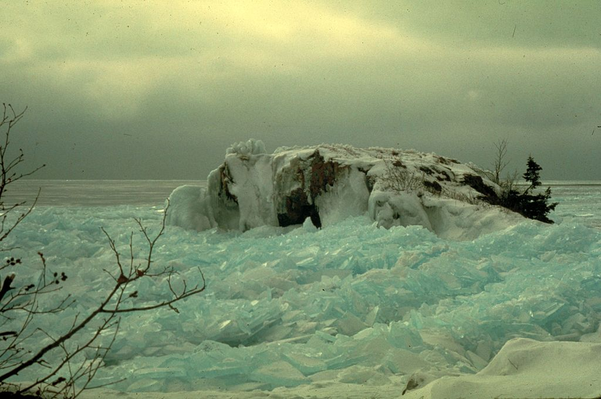

Blog entry May 1, 2025

The Great Inland Sea with ice
Why I must leave my beloved North Shore
There’s the idea of the Wechselbad or Contrast bath therapy where a person immerses oneself back and forth between a hot bath and a cold bath. The effect is supposed to stimulate “vasodilation,” thereby improving blood flow and healing.
This is also how I describe my life here in the last county on Lake Superior’s North Shore before Canada. I’m saying the physical place itself, the millions of acres of boreal forest on the northwestern third of the North Shore of Lake Superior is the steaming hot bath, while the social-psychology, the human side, is the ice-cold bath.